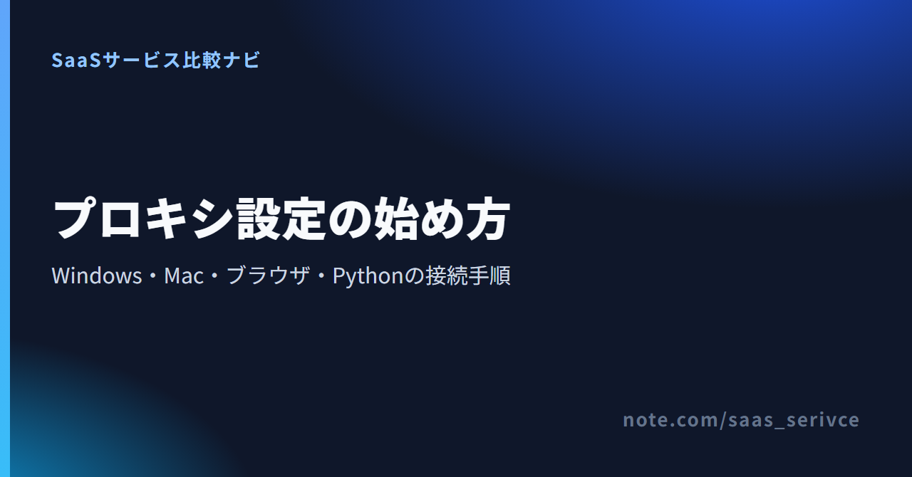
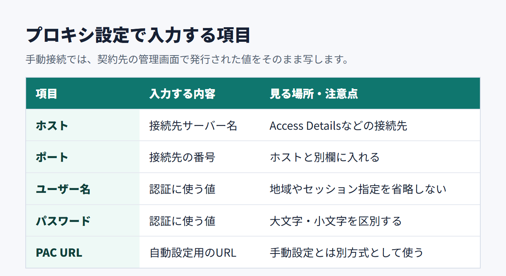
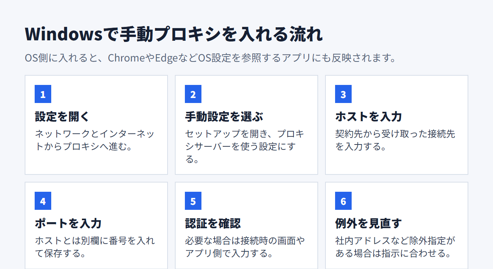
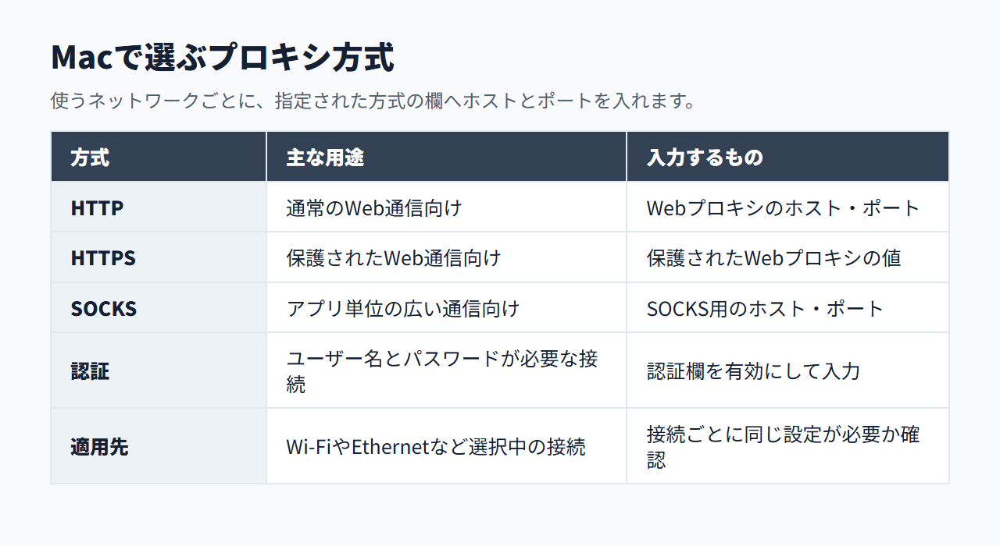
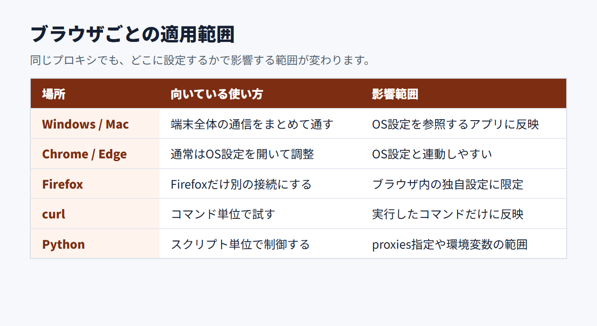
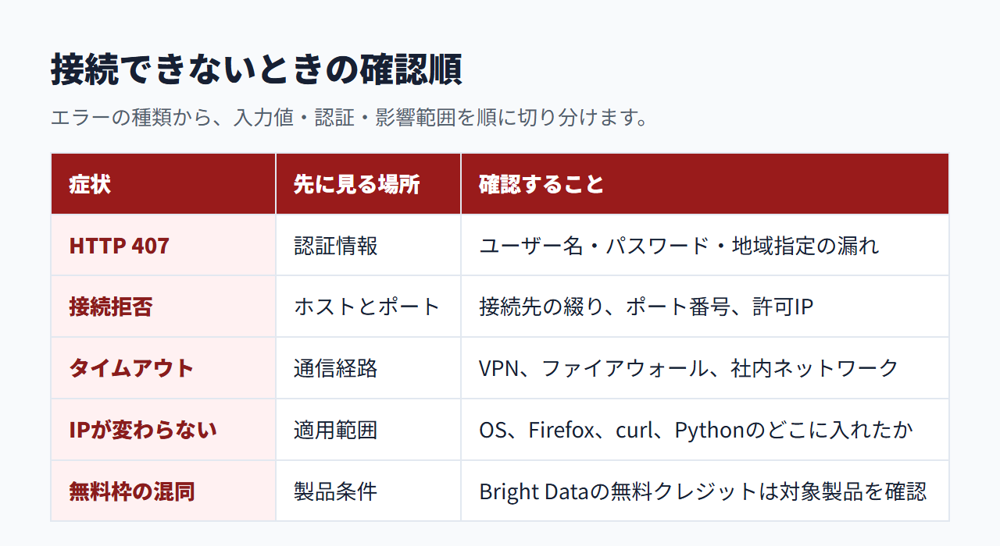

プロキシサーバーの設定方法｜Windows・Mac・ブラウザ・Pythonの手順
プロキシを設定すると、端末やアプリの通信を指定した中継サーバーへ通せます。ホスト、ポート、認証方式をどこへ入力するのか。設定後に何を確かめるのか。必要な作業を順に説明します。
プロキシ設定に必要な4つの情報
ユーザー名とパスワードで認証する手動接続では、次の4つの情報を使います。接続元IPを許可する方式なら、必要なのは主にホストとポートです。PAC URLを渡された場合は、各項目を個別に入力せず、自動構成スクリプトとして設定します。
- ホスト：接続先のサーバー名
- ポート：接続先の受付番号
- ユーザー名：パスワード認証で契約や地域を識別する値
- パスワード：パスワード認証で使う値
- PAC URL：自動構成用のURL

手動設定とPAC URLの違い
ホストとポートを受け取った場合は、OSやアプリの手動設定を使います。認証は、ユーザー名とパスワードを入力する方式のほか、接続元IPを事前に許可する方式もあります。契約先が指定する方法に合わせてください。
PAC URLは、アクセス先に応じて使うプロキシを自動で切り替えるファイルの場所です。Windowsでは「セットアップスクリプト」、Firefoxでは「自動プロキシー設定URL」に入力します。PAC URLだけを渡されたときは、URLからホストやポートを推測しないでください。
「設定を自動的に検出する」は、PACの指定とは別の方式です。組織から案内された方式だけを選びます。
ユーザー名とパスワードを入力する場所
Windowsの手動設定画面には、ホストとポートの欄が中心に表示されます。ユーザー名とパスワードは、接続時に出る認証画面や利用するアプリへ入力する場合があります。接続元IPの許可方式なら、これらの入力は不要です。
Macは選んだプロトコルで認証欄を有効にできます。Firefox、curl、Pythonは、それぞれの接続設定へ認証情報を渡します。OS画面に欄がないからといって、認証が不要とは限りません。
登録後は、利用する製品の接続情報と認証方式を確認できます。Residential Proxiesの通常アクセスには、法人向けのKYC条件があります。プロキシ製品の試用条件は、対象APIの月5,000無料クレジットとは別です。
Windows 11・10でプロキシを設定する方法
Windowsでは「設定」から「ネットワークとインターネット」を開き、「プロキシ」へ進みます。ホストとポートが手元にある場合は、手動設定を選びます。

ホストとポートを手動で入力する
設定の流れは次のとおりです。
- 「設定」を開く
- 「ネットワークとインターネット」を選ぶ
- 「プロキシ」を開く
- 手動プロキシ設定の「セットアップ」を選ぶ
- プロキシサーバーを使う設定を有効にする
- ホストとポートを入力して保存する
プロキシを通さない宛先がある場合は、例外欄へ登録します。社内システムなどのローカルアドレスを除外する設定もあるため、勤務先から指定された内容をそのまま反映してください。
自動検出とセットアップスクリプトを使う
組織からPAC URLを受け取った場合は、「セットアップスクリプトを使う」を有効にします。スクリプトのアドレス欄へPAC URLを貼り付け、保存します。
自動検出を指定されたなら、「設定を自動的に検出する」を使います。手動設定やPACも同時に有効にすると、意図しない接続先が選ばれることがあります。指定されていない方式は切っておくと原因を追いやすくなります。
認証画面が出ない場合を確認する
Windows標準のプロキシ画面は、主に接続先とポートを指定する場所です。認証画面は、ブラウザで最初に通信したときや、対象アプリを起動したときに出る場合があります。
接続に失敗するなら、アプリがOS設定を使う仕様かを調べます。URLへ認証情報を埋め込む前に、アプリ側の認証欄を見てください。
Macでプロキシを設定する方法
Macでは、使用中のWi-FiやEthernetごとにプロキシを設定します。「システム設定」から「ネットワーク」を開き、対象の接続を選びます。そのうえで「詳細」の「プロキシ」へ進みます。

HTTP・HTTPS・SOCKSから方式を選ぶ
契約先や管理者から指定された通信方式を選びます。WebプロキシはHTTP、保護されたWebプロキシはHTTPS、SOCKSプロキシはSOCKS用です。
- 使用中のネットワークを選ぶ
- 「詳細」を開く
- 「プロキシ」を選ぶ
- 指定されたプロトコルを有効にする
- サーバー名とポートを入力する
HTTPとHTTPSに同じ値を入れるとは限りません。接続先から別々の値を渡された場合は、それぞれ対応する欄へ写します。
認証情報を入力して設定を適用する
認証が必要な接続では、プロキシサーバーがパスワードを要求する設定を有効にします。ユーザー名とパスワードを入れ、「OK」を選びます。
設定は選択中のネットワークサービスに結び付きます。Wi-Fiへ設定したあとでEthernetへ切り替えた場合、Ethernet側にも同じ設定が必要かを見直してください。
Chrome・Edge・Firefoxでプロキシを設定する方法
ChromeとEdgeは、原則としてOSのプロキシ設定を使います。Firefoxはブラウザ内に独自の接続設定を持つため、Firefoxの通信だけをプロキシへ通したい場合に向きます。

ChromeとEdgeはOS設定を使う
Chromeの設定で「プロキシ」を検索すると、パソコンのプロキシ設定を開く項目が見つかります。Edgeでは「システムとパフォーマンス」に、コンピューターのプロキシ設定を開く項目があります。
変更は、同じOS設定を参照するアプリにも及びます。Chrome以外へ影響させたくない場合は、Firefoxや処理単位の方法を検討します。
Firefoxだけにプロキシを設定する
現行版のFirefoxでは「設定」から「プライバシーとセキュリティ」を開きます。続いて「接続とソフトウェアのセキュリティ」にある「詳細設定」から「プロキシ設定」へ進みます。そこで「プロキシを設定」を選びます。旧版では「一般」の「ネットワーク設定」から「接続設定」を開く流れでした。
手動の場合は、指定されたHTTP、HTTPS、SOCKSの欄へホストとポートを入力します。SOCKS利用時のDNSの扱いも選べますが、接続先の指定がある場合はそちらを優先します。
影響範囲で設定先を選ぶ
- 端末の通信を広く対象にする：WindowsまたはMac
- Firefoxの通信だけを対象にする：Firefoxの接続設定
- コマンド単位で使う：curlのオプション
- スクリプト単位で使う：Pythonのproxies
設定先を狭くすると、普段使うアプリへの影響を抑えられます。一方、複数の設定先へ同じプロキシを入れると、解除漏れや二重設定の原因になります。
curl・Pythonでプロキシへ接続する方法
curlでは--proxyと--proxy-userを使います。PythonのRequestsではproxiesまたは環境変数を利用し、認証情報を公開リポジトリへ残さないようにします。
curlでホスト・ポート・認証情報を渡す
次の値は説明用のダミーです。実際には、契約先から受け取った値へ置き換えます。
ターミナルへ次の1行を入力します。
curl --proxy "http://proxy.example:${PROXY_PORT}" --proxy-user "username:password" "https://example.com/ip"
ホストとポートは--proxy、ユーザー名とパスワードは--proxy-userへ分けています。認証情報をプロキシURLへ埋め込む方法もありますが、記号を含む値はURLエンコードが必要です。入力ミスを減らすなら、分離した指定から始めます。
Python Requestsでproxiesを指定する
次の例では、認証情報を含むURLを環境変数PROXY_URLから読み込みます。認証情報をソースコードへ残さないための分離です。ただし、環境変数そのものが安全な保管先になるわけではありません。
Pythonファイルに、次の7行を上から順に記載します。
- import os
- import requests
- proxy_url = os.environ["PROXY_URL"]
- proxies = {"http": proxy_url, "https": proxy_url}
- response = requests.get("https://example.com/ip", proxies=proxies)
- print(response.status_code)
- print(response.text)
PROXY_URLには、利用するサービスが示す認証形式を設定します。HTTP用とHTTPS用で接続先が異なるなら、環境変数も分けて読み込みます。
認証情報をコードへ直書きしない
パスワードをソースコードへ直接書くと、Gitの履歴やエラーログから漏れるおそれがあります。本番や共有端末では、OSの資格情報ストアや実行基盤のシークレット管理を優先します。
環境変数は、コードへの直書きを避けるための最低限の分離です。値を画面に表示したり、ログへ出力したりしないでください。画面共有にも注意が要ります。ユーザー名には、地域やセッションの指定が現れることがあります。
リンク先では、Bright Dataの製品情報と料金を確認できます。curlやPythonへ渡す認証形式は、登録後の接続情報と公式資料を照らし合わせてください。
Bright Dataの接続情報を各設定へ入力する方法
Bright DataにはAPIキーを使う「API Access」と、プロキシ用のユーザー名・パスワードを使う「Native Access」があります。OSやFirefox、curlからプロキシへ直接つなぐ場合は、Native Accessの接続情報を使います。

Residential Proxiesの通常アクセスではKYCが必要です。申請できるのは、企業ドメインのメールを認証できる登録企業です。事業内容、利用目的、連絡先を提出すると、結果は最大48時間で更新されます。追加確認として、身分証明書やビデオ通話を求められる場合もあります。
robots.txtに従うImmediate Residential Accessは、KYCなしで利用できる例外です。DatacenterやISPまで同じKYC条件とは限らないため、利用する製品の画面で開始条件を確かめてください。
管理画面で4つの接続情報を取得する
管理画面の「Proxies」から作成済みの製品を開き、「Access Details」を表示します。Native Accessで使う4つの接続情報は、直後の一覧のとおりです。同じ画面でまとめて確認できます。Account IDは「Account Settings」の「Profile」で確認できます。
- ホスト：Access Detailsの接続先
- ポート：Access Detailsのポート
- ユーザー名：brd-customer-[ACCOUNT_ID]-zone-[PRODUCT_NAME]
- パスワード：Access DetailsのPassword
ユーザー名とパスワードは大文字・小文字を区別します。空白を入れず、ユーザー名とパスワードの間はコロンで区切ります。地域やセッションの指定が加わる場合も、表示された文字列を途中で省略しないでください。
OS・Firefox・コードの入力先へ写す
OSやFirefoxへ設定するのは、Access Detailsに表示された接続先とポートです。認証を求められたら、同じ画面のUsernameとPasswordを入力します。
curlでは接続先とポートを--proxyへ、UsernameとPasswordを--proxy-userへ渡します。API向けの処理ではAPI Accessを選ぶ場合もあるため、APIキーとNative Accessの認証情報を混同しないでください。
プロキシ製品には、新規登録時に1回限り$2のトライアルクレジットが付き、有効期間は7日間です。支払い方法を追加すると、30日間有効の$5ボーナスが付きます。Residential Proxiesでは、前述のKYCまたは例外条件を満たしたあとに接続情報を使います。
登録後は利用するプロキシ種別の接続先を作成し、各設定へ移す認証情報を取得できます。対象API向けの月5,000無料クレジットとは条件が異なります。
プロキシ設定を確認・解除する方法
設定画面の有効状態と、接続先から見えるIPの両方を見ます。解除するときは、OS、Firefox、環境変数など、自分が有効にした場所を元へ戻します。
設定が有効かを二段階で確認する
最初に、設定した画面を開き直します。手動設定ならホストとポート、PACならURLが残っているかを見ます。あわせて、該当する設定が有効になっているかも確かめます。
次に、接続サービスが案内する確認先へアクセスし、外部から見えるIPを調べます。FirefoxだけでIPが変わるなら、ブラウザ独自設定が効いています。curlだけ結果が違う場合は、コマンドの指定範囲に限って接続できている状態です。
IPが変わっても、地域や認証方式まで正しいとは限りません。契約先の接続情報に地域指定がある場合は、その値も照合します。
Windows・Mac・Firefoxの設定を解除する
Windowsでは、手動設定またはセットアップスクリプトを有効にした画面へ戻り、該当する設定をオフにします。Macは、使用中のネットワークにあるプロキシ画面で、選択したプロトコルを解除して「OK」を選びます。
Firefoxは接続設定を開き、プロキシを使わない設定、または普段使っていた方式へ戻します。会社や学校が管理する端末では、管理者指定の設定を勝手に解除しないでください。
curl・Pythonの環境変数を元へ戻す
HTTP_PROXY、HTTPS_PROXY、PROXY_URLなどを使った場合は、設定したシェルや実行環境から削除します。ターミナルを閉じるまで有効な一時設定と、OSやクラウド側に保存した設定を切り分けて確認します。
コードのproxies指定と環境変数が重なっていると、解除したつもりでも通信が残る場合があります。両方を使っていないか検索してから、対象アプリを再起動します。
プロキシへ接続できないときの確認項目
まずホストとポート、次に認証、最後にVPN、例外設定、接続地域を見ます。エラーの種類から調べる場所を絞ると、設定を最初からやり直さずに済みます。

HTTP 407は認証情報を見直す
HTTP 407は、プロキシ側が認証を求めているときに返る状態です。ユーザー名とパスワードの入力漏れ、コピー時の空白、地域やセッション指定の欠落がないかを見ます。
URLへ認証情報を埋め込んだ場合は、パスワード中の記号が正しくエンコードされているかも確認します。curlなら--proxy-userへ分けると、URLの組み立てミスを切り分けられます。
接続拒否とタイムアウトはホスト・ポートから確認する
接続拒否が出たら、ホストの綴りとポートを接続情報へ戻って照合します。接続元IPの登録が必要な方式では、現在のIPが許可されているかも調べます。
タイムアウトでは、ファイアウォールや社内ネットワークが通信を止めている可能性があります。VPNや別のプロキシを一時的に外し、接続経路を一つにして試します。特定サイトだけ開けない場合は、例外リストや接続先側の制限も候補です。
IPや地域が変わらないときは影響範囲を確認する
ChromeとEdgeはOSの設定を参照し、Firefoxはブラウザ内の設定を使います。別の場所へ設定していると、確認に使ったブラウザへ反映されません。
対象アプリを再起動し、外部から見えるIPをもう一度調べます。地域が違う場合は、ユーザー名などに含まれる地域指定と、作成した接続先の条件を見直します。
接続先や認証方式は、管理画面の値と公式資料を並べて照合できます。パスワードなどの実値は問い合わせ文へ載せないでください。
まとめ｜使う範囲に合わせて設定先を選ぶ
端末全体ならOS、Firefoxだけならブラウザ、処理単位ならcurlやPythonへ設定します。つながらない場合は、入力値、認証、影響範囲の順に見直してください。
- 接続情報と認証方式を先にそろえる
- Chrome・EdgeはOS設定を使う
- Firefoxはブラウザ内で設定する
- コードの認証情報は外部管理する
- 確認と解除は設定した場所で行う
接続情報を取得したら、利用環境に合う設定方法を選べます。無料クレジットは対象製品が分かれているため、プロキシの試用条件と混同しないでください。